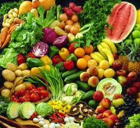

<!--
  Generated template for the IntermedioPage page.

  See http://ionicframework.com/docs/components/#navigation for more info on
  Ionic pages and navigation.
-->
<ion-header>

  <ion-navbar>
    <ion-title>Intermedio</ion-title>
    <ion-buttons>
      <button ion-button icon-left menuToggle>
        <ion-icon name="menu"></ion-icon>
      </button>
    </ion-buttons>
  </ion-navbar>

</ion-header>


<ion-content padding>
  <div text-center>
    
    <!--<button ion-button outline (click)="irMamiferos()">Mamiferos</button>-->
    <!--<button ion-button outline [navPush]="pokedex">Pokedex</button>-->
  </div>
  <div text-center>
    
    <!--<button ion-button outline (click)="irPeces()">Peces</button>-->
    <!--<button ion-button outline [navPush]="pokedex">Pokedex</button>-->
  </div>
  <div text-center>
    
    <!--<button ion-button outline (click)="irAves()">Aves</button>-->
    <!--<button ion-button outline [navPush]="pokedex">Pokedex</button>-->
  </div>

  <div text-center>
    
    <!--<button ion-button outline (click)="irMeses()">Meses del Año</button>-->
    <!--<button ion-button outline [navPush]="pokedex">Pokedex</button>-->
  </div>
</ion-content>

